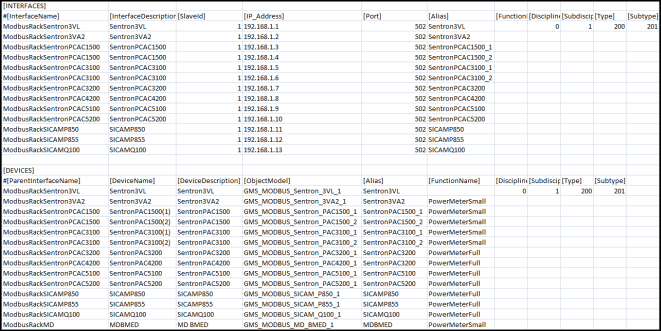

Modbus TCP Power Devices Legacy
This section enables you to understand the components, such as the list of object models and devices associated with the following two Modbus power management libraries:
- EnergyAndPower_Device_Modbus_HQ_1
- EnergyAndPower_Meters_Modbus_HQ_1
It also highlights the symbols and graphic templates that are part of the object models. The details of the symbols and graphic templates are documented in the HQ Modbus Energy Management Libraries Reference.
For information on naming conventions for names, paths, and other elements, see Common Rules for Names and Paths in the Management System and Naming Rules for Subsystem Elements in Naming Conventions.
This section provides background information on Modbus TCP Power Devices of Desigo CC. For related procedures, see the step-by-step section.
Libraries
When you install the management station and select the Modbus TCP Power Devices extension module from the Energy and Power extension suite, the following two libraries are installed on your system.
EnergyAndPower _Device_Modbus_HQ_1: This library lists the object models associated with the Sentron and Sicam devices.
Device | Object Model | Short Name | Function Name |
Sentron 3VA2 | GMS_MODBUS_Sentron_3VA2_1 | Sentron_3VA2 | PowerMeterSmall |
Sentron 3VL | GMS_MODBUS_Sentron_3VL_1 | Sentron_3VL |
|
Sentron PAC1500 | GMS_MODBUS_Sentron_PAC1500_1 | Sentron_PAC1500_1 | PowerMeterSmall |
Sentron PAC1500 | GMS_MODBUS_Sentron_PAC1500_2 | Sentron_PAC1500_2 | PowerMeterSmall |
Sentron PAC3100 | GMS_MODBUS_Sentron_PAC3100_1 | Sentron_PAC3100_1 | PowerMeterSmall |
Sentron PAC3100 | GMS_MODBUS_Sentron_PAC3100_2 | Sentron_PAC3100_2 | PowerMeterSmall |
Sentron PAC3200 | GMS_MODBUS_Sentron_PAC3200_1 | Sentron_PAC3200 | PowerMeterFull |
Sentron PAC4200 | GMS_MODBUS_Sentron_PAC4200_1 | Sentron_PAC4200 | PowerMeterFull |
Sentron PAC5100 | GMS_MODBUS_Sentron_PAC5100_1 | Sentron_PAC5100 | PowerMeterFull |
Sentron PAC5200 | GMS_MODBUS_Sentron_PAC5200_1 | Sentron_PAC5200 | PowerMeterFull |
Sicam P850 | GMS_MODBUS_SICAM_P850_1 | SICAM_P850 | PowerMeterFull |
Sicam P855 | GMS_MODBUS_SICAM_P855_1 | SICAM_P855 | PowerMeterFull |
Sicam Q100 | GMS_MODBUS_SICAM_Q100_1 | SICAM_Q100 | PowerMeterFull |
Siemens MD-BMS or MD-BMED | GMS_MODBUS_MD_BMED_1 | MDBMED | PowerMeterSmall |

NOTE:
For all the above devices the value of the littleEndianRegister needs to be set to 0 before you start the project.
EnergyAndPower _Meters_Modbus_HQ_1: This library lists the graphic templates and symbols associated with the Sentron and Sicam devices. For details of symbols and graphic templates, see HQ Modbus Energy Management Libraries Reference.
Known Limitations:
For the meter types Sentron PAC5100 and PAC5200, as well as for Sicam P850, P855 and Q100, the displayed energy values are not actually provided by the meter register directly. The raw register data are scaled for correct display in the management station graphic, but any functions like trending or reporting will still use the raw, un-scaled data. These are not representative of the real energy values.
CSV Data
In order to create instances of the Modbus TCP Power Devices, you must create the engineering data in the form of a comma-separated value (CSV) file. A CSV file contains data in which values are represented as text and separated using a separator such as comma (,). This format can be easily edited in simple text editors such as Wordpad or Notepad. More elaborate editing can be done using advanced word processing tools, like Excel. The Importer can parse CSV files which only use the comma (,) as the separator.
The CSV file must consist of the following components:
- Name of the Modbus Library
- Name and details of the interface where you want to create the devices
- Names and details of devices
For details on the number of fields for library, interface and devices entries in the CSV file, see the Engineering Data section in the Modbus Help.
The following example shows a sample CSV file that is used to create instances of devices.

You do not need to specify the value for the Address Profile in the CSV file as all the object models have only the default address profile associated with them.